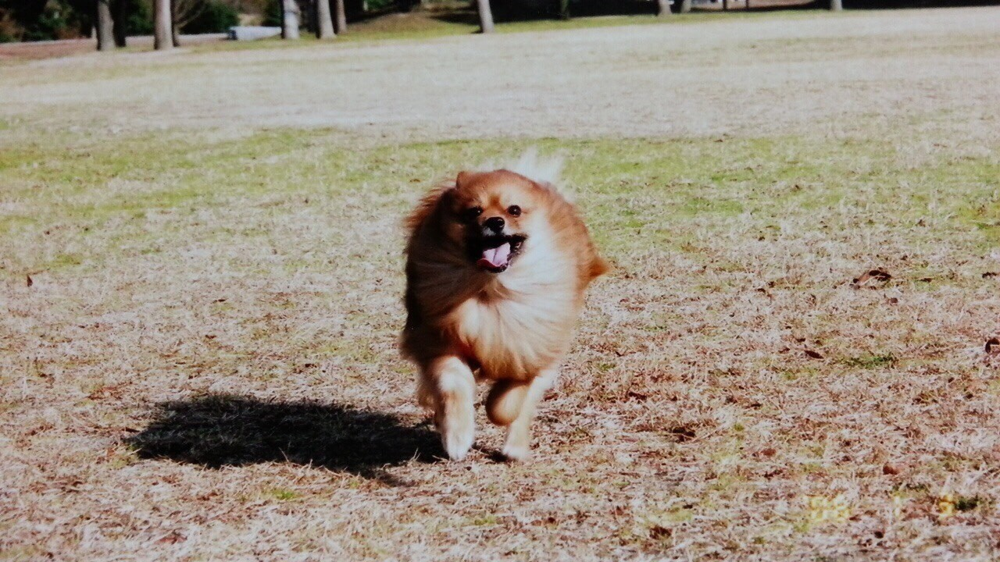
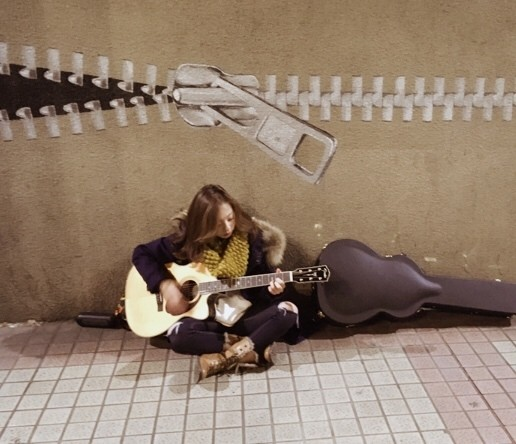
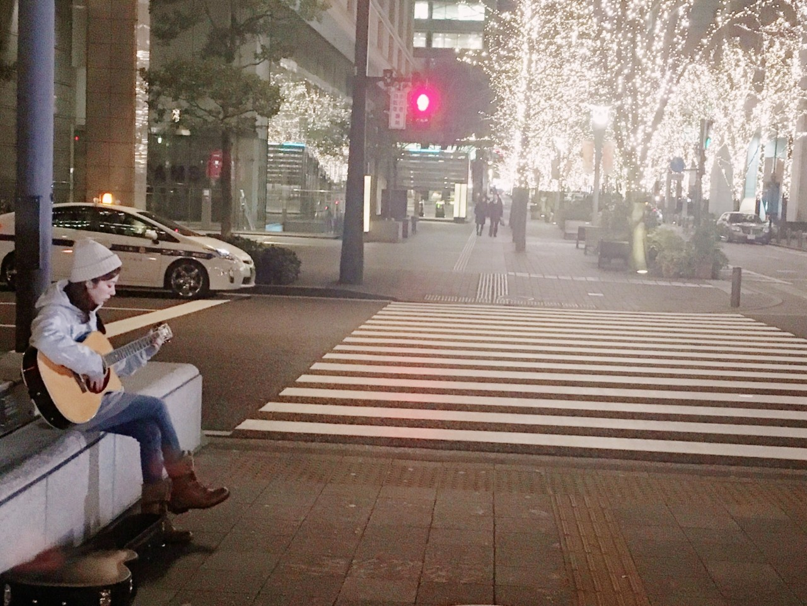
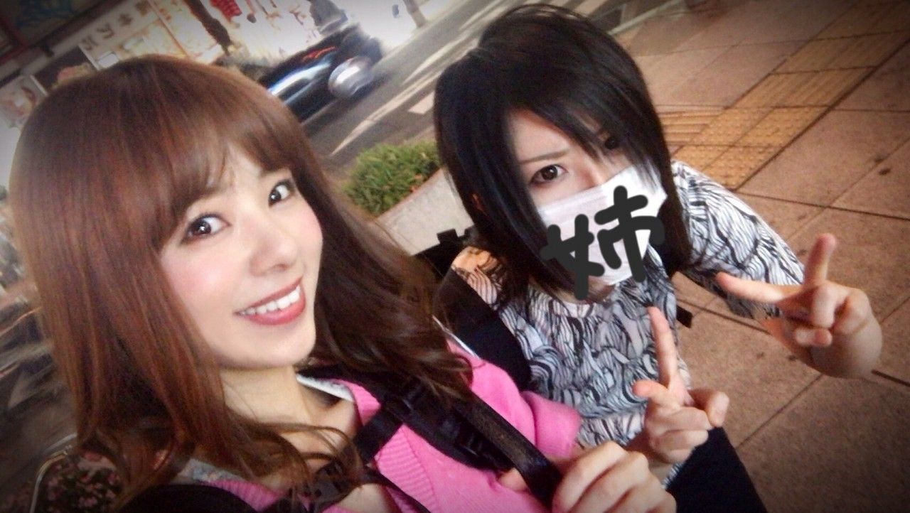

こんにちわ‼︎
ろってぃーです♪
今月の5月5日は愛犬「サスケ」の命日でした．

サスケと言えば17thの個人pv．
「SASUKE」見て頂けましたでしょうか？
中学生の頃に，大好きな「サスケ」への想いを書いた歌をこうして１つの作品として残す事ができました♪ 感謝してます‼︎
17thは凄く自分らしいpvができたんじゃないかな？と思ってます．
監督さんに本当に感謝してます．
755等では紹介していたんですが，blogで個人pvの事に触れてなかったので 改めてサスケが天国に行った頃に更新したblogを貼っておきます．


そして，話を急に変えますが
毎日毎日，色んな音楽聴くのがhappyです‼︎笑笑
最近気になってるアーティストさんは「ちゃんみな」さん．
最近話題になってるみたいで 色々音楽の動画を見ていたら動画が出てきて...
このお姉さんかっこいい‼︎ 人生経験豊富そう‼︎って思ってたんですが...まさかの。
18歳‼︎:(；ﾞﾟ'ωﾟ'):
「練馬のビヨンセ‼︎」って言われてるみたいですよ‼︎
アルバム全部聴いて歌詞も読ませて頂きました． かっこいいです‼︎
そして先週大阪で姉と過ごしました．

姉と久々にUSJに行けました‼︎
かなり楽しかったです．
行く度にUSJはパワーアップしてるんです♡ 期待を上回ってくるんです．
又 USJでLiveしたいですね♪♪
では‼︎